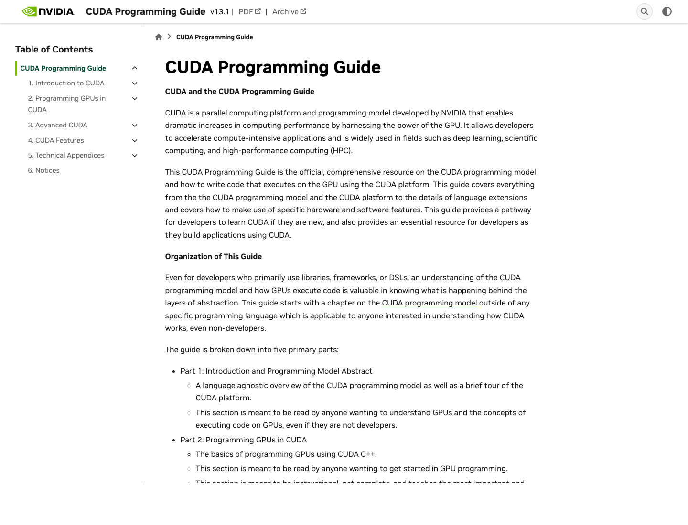
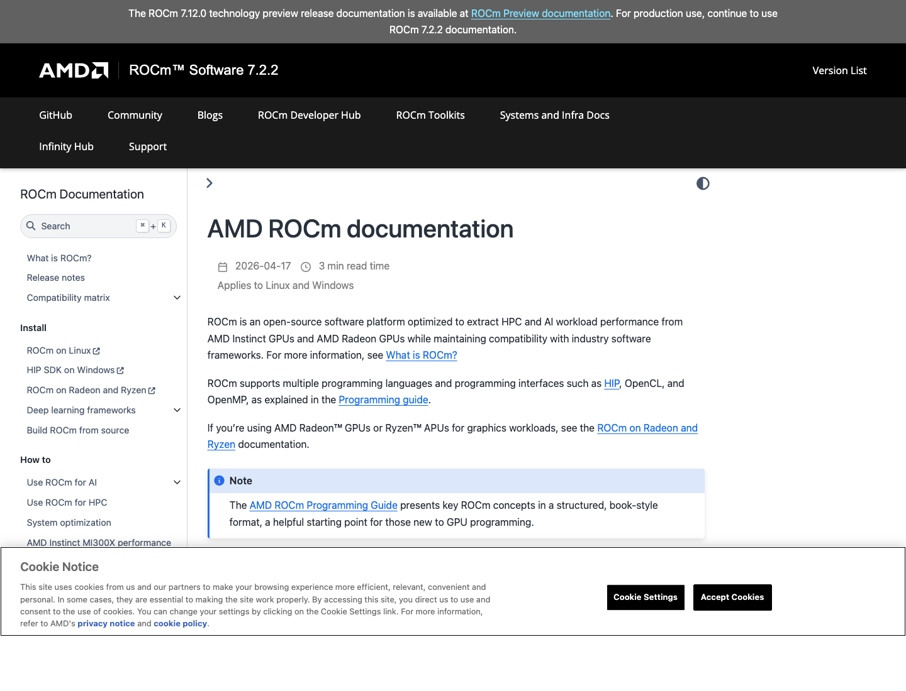
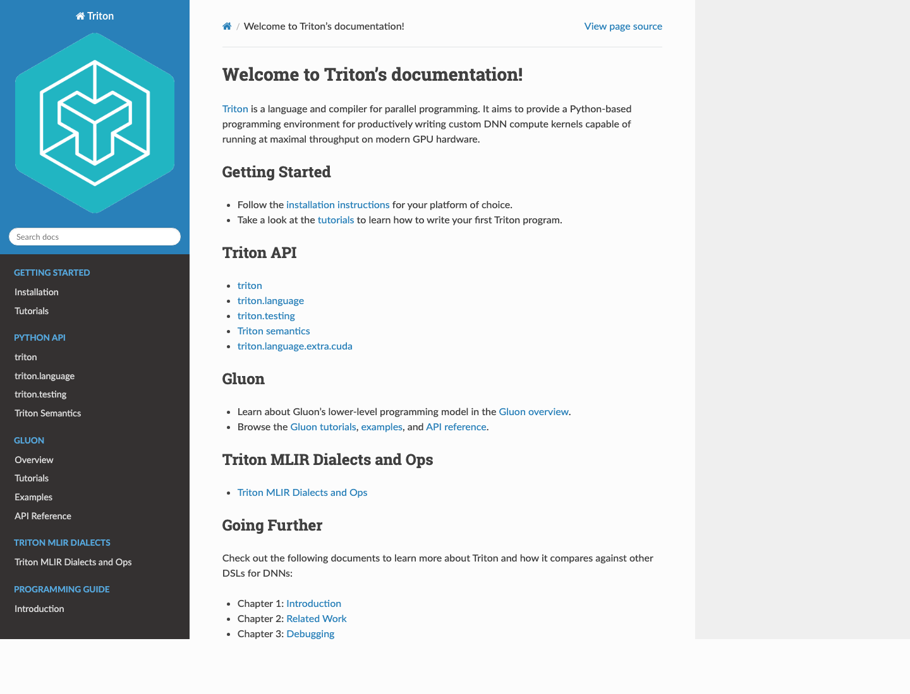
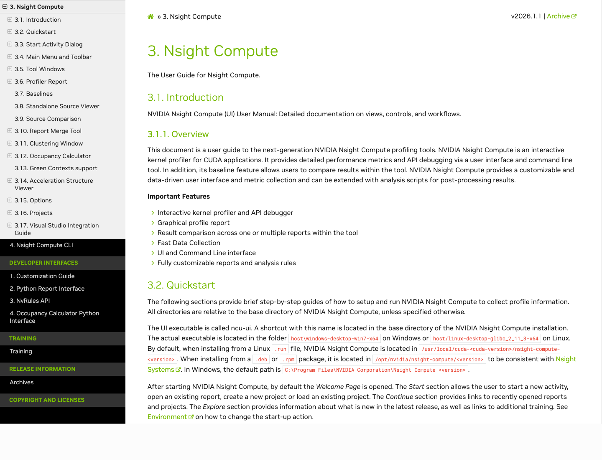

芯片 SDK 的第一触点通常是官方文档。下面是 2026-04-30 抓取的官方页面截图，用来观察它们如何组织 programming model、安装/兼容、工具、API 和教程入口。



Profiler 的成熟度不只看 counter 数量，还看它是否能把报告、baseline、源码比较、规则和 CLI 自动化组织成稳定工作流。

为了接近原报告的信息密度，这里不只展示指标，还把“证据、原因、改动、预期”放在同一屏，突出性能工具如何转成行动。
ROCm 的 trace/counter 形态适合自动化，但需要额外解释层把 counter 变成开发者行动。
价值：把 runtime fault 映射到源码位置。
价值：保留传统调试器心智。
价值：先在 Python 侧缩小正确性问题。
优势是控制细；成本是线程、同步、内存和编译参数都要显式管理。
优势是 tile 级表达更紧凑；风险是编译器决策和后端差异要解释清楚。
编译器栈需要从隐藏后台变成可追问的解释层：源码、IR、指令、寄存器、occupancy 和 profiler 指标要能互相跳转。
价值：专家能从 PTX/SASS 和 profiler 指标回到源码策略。
价值：开放 LLVM 链路适合接入自研 pass 和解释器。
价值：高层 DSL 的自动优化需要默认解释“为什么这样生成”。
SDK 生态问题不能只写在文档里。更好的形态是可执行检查器，把本机环境直接映射为风险和修复建议。